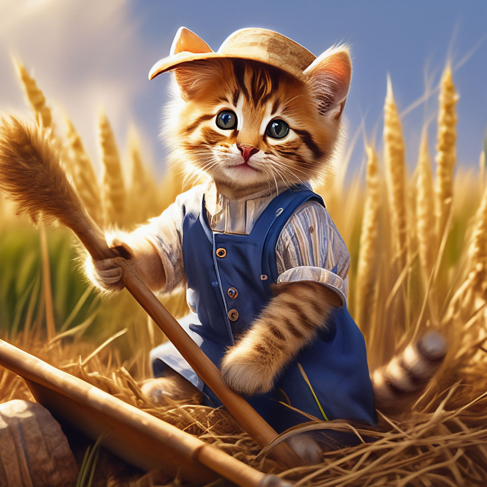
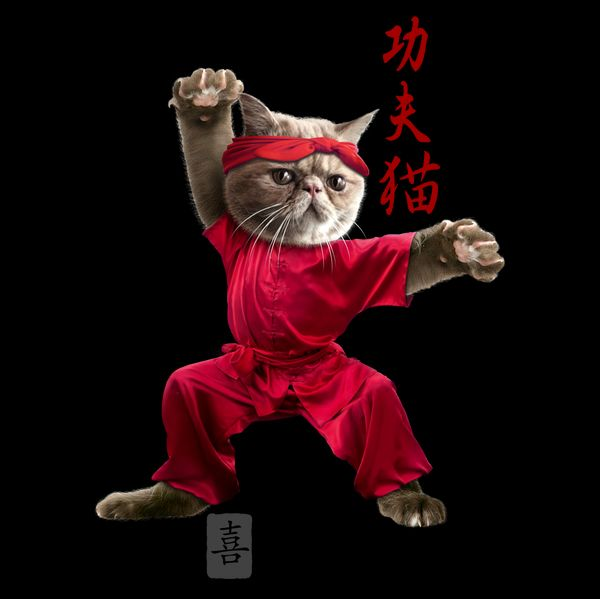
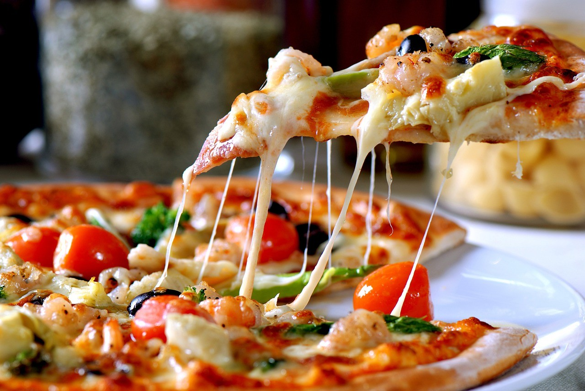
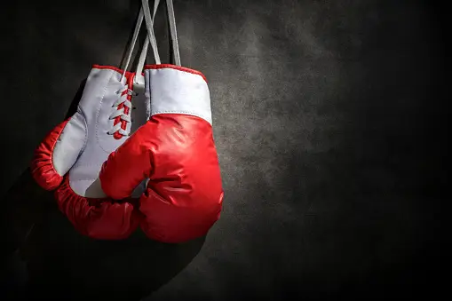
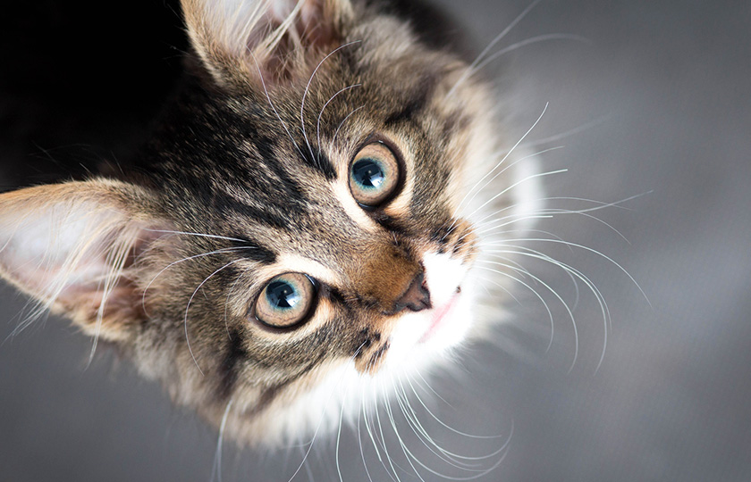
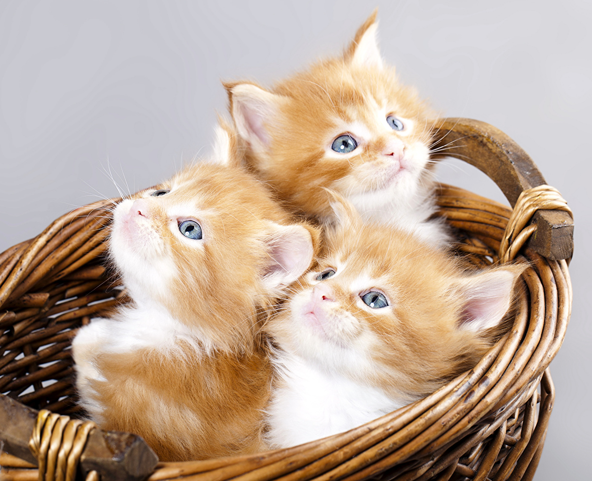

L'histoire de Poun, le chat boxeur et pizzaiolo Dans un petit village de Thaïlande, niché au bord d'une rivière paisible, vivait un chat pas comme les autres. Son nom était Poun, et il avait deux passions : la boxe et la pizza. (villageois)
Le village, un havre de paix aux maisons de bois et de bambou, était entouré de rizières verdoyantes et de champs de légumes. Les habitants, des gens simples et travailleurs, vivaient en harmonie avec la nature. C'était dans ce cadre idyllique que Poun grandissait, un chat heureux et chanceux.(village)

Dès son plus jeune âge, Poun était fasciné par les combats de boxe. Il passait des heures à observer les mouvements des boxeurs, dont Maksym, un chat robuste et puissant, dans le temple bouddhiste au centre du village, rêvant de devenir un champion lui-même. Un jour, il a décidé de s'entraîner. Il a trouvé un vieux sac de boxe et a commencé à frapper dessus avec ses pattes agiles et rapides. Apprenant vite, il se perfectionnait chaque jour.(red-cat-kungfu)
En même temps que la boxe, Poun aimait la pizza. L'odeur de la pâte à pizza qui cuit au four le rendait fou, et il adorait le goût du fromage fondu et de la sauce tomate. Un jour, il a décidé d'apprendre à faire des pizzas lui-même. Il a trouvé un livre de recettes et a commencé à suivre les instructions avec patience et méticulosité. Il a vite appris à faire des pizzas délicieuses, rivalisant avec les meilleurs pizzaiolos du village, dont Nafion, un chat connu pour ses pizzas créatives et audacieuses. (pizza)
Un jour, un grand tournoi de boxe a été organisé dans le village. Poun s'est inscrit, déterminé à gagner. Il a combattu avec courage et détermination, ses mouvements précis rappelant ceux des boxeurs qu'il admirait tant. Il a remporté tous ses combats, devenant le champion du village !(gants-de-box)
Son combat le plus mémorable fut contre un chaton arrogant du village voisin, connu pour ses coups puissants et sa grande vitesse. Poun, plus petit et plus agile, a utilisé son intelligence et sa technique pour esquiver les attaques de son adversaire et le contrer avec des coups précis. Le combat était intense et serré, mais Poun a finalement triomphé, démontrant sa force et sa persévérance.(chatcute)
Poun a eu beaucoup de chatons avec sa partenaire, une chatte douce et affectueuse. Ils ont élevé leurs chatons ensemble, leur apprenant à boxer et à faire des pizzas. Les chatons de Poun étaient tous vifs et intelligents, et ils ont tous grandi pour devenir des chats heureux et accomplis.(chaton)Voici quelques anecdotes amusantes sur Poun : Il aimait porter des petits gants de boxe lorsqu'il faisait des pizzas. Il avait un miaulement très particulier qui ressemblait à un aboiement. Il était toujours prêt à aider les autres, et il était très apprécié par les habitants du village. Poun était un chat unique et spécial. Il a laissé un souvenir impérissable dans le cœur de tous ceux qui l'ont connu.